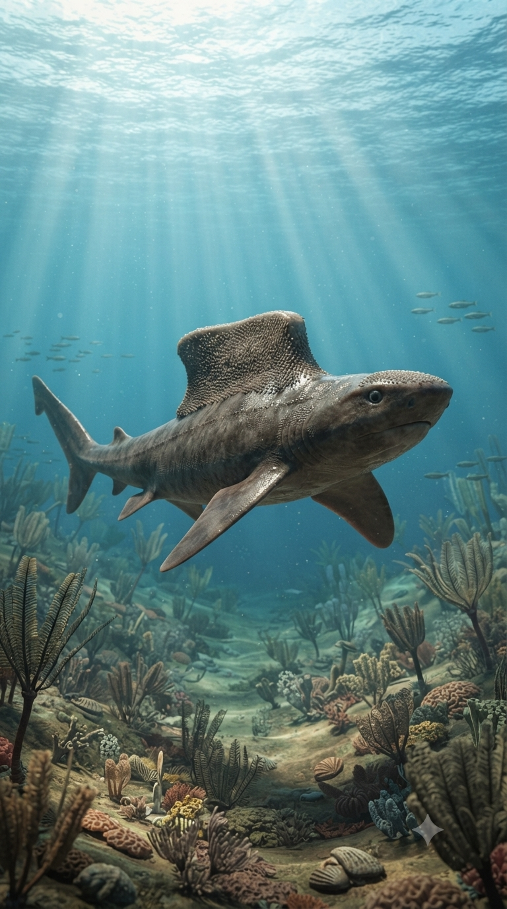
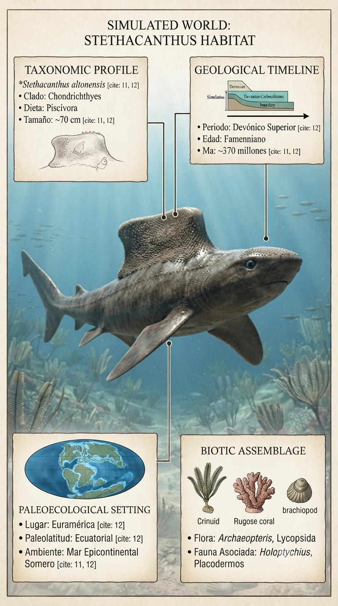
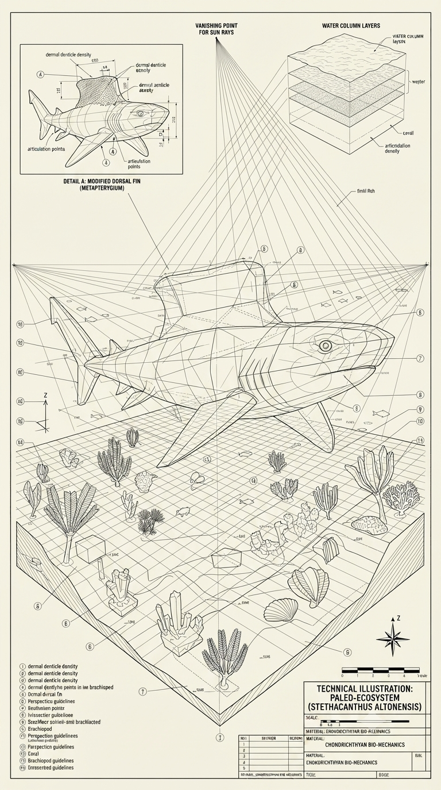
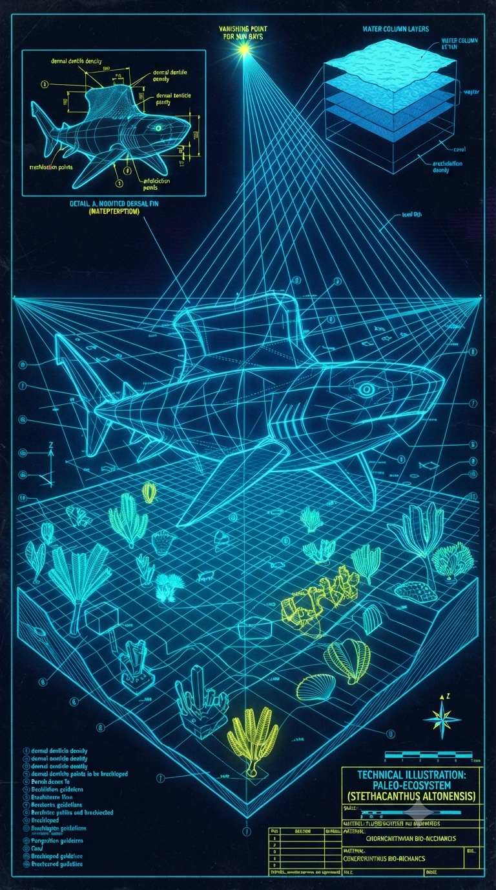

Paleoficha de Stethacanthus




Periodo: Devónico Superior (Famenniense)
Edad: Hace aproximadamente 360 millones de años.
Dieta: Piscívoro y depredador de pequeños invertebrados.
Distribución: Mares epicontinentales de Laurussia.
TAXÓN:
Stethacanthus productus
CLADO:
Symmoriida (Chondrichthyes)
DIETA:
Piscívoro y depredador de pequeños invertebrados.
TAMAÑO:
Entre 70 cm y 1 metro de longitud.
LOCOMOCIÓN:
Natación activa con cuerpo hidrodinámico y una característica aleta dorsal especializada.
TIEMPO:
Devónico Superior (Famenniense), hace aproximadamente 360 millones de años.
GEOGRAFÍA:
Formaciones marinas globales, como Cleveland Shale (Estados Unidos).
EQUIVALENCIA PALEOGEOGRÁFICA:
Mares epicontinentales someros de Laurussia.
AMBIENTE PALEOECOLÓGICO:
Plataformas marinas templadas y tropicales de elevada biodiversidad.
ECOLOGÍA:
• Flora: Fitoplancton y algas bentónicas.
• Fauna secundaria: Placodermos, tiburones primitivos, braquiópodos y cefalópodos.
• Nicho: Depredador de la columna de agua; los machos poseían una espectacular aleta dorsal en forma de "yunque" cubierta de dentículos, probablemente utilizada durante el cortejo.
• Relaciones: Competía con otros peces depredadores y podía convertirse en presa de grandes placodermos.
CLIMA:
Wm10 (Marino). Océanos cálidos y estables previos a la crisis del Hangenberg.
ESTADO ECOLÓGICO:
Estable. Uno de los tiburones fósiles más extraños y representativos del Devónico, famoso por su extraordinario dimorfismo sexual.
Vídeo PalEntropía:
▶ Ver Short en YouTube